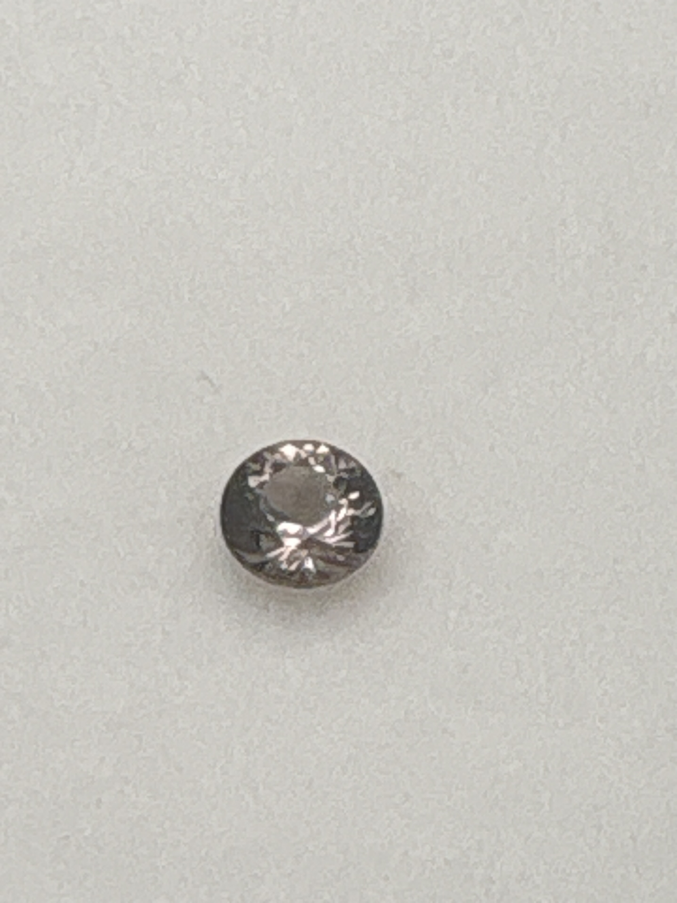

The Gem Drawer › No. 98

A round garnet labeled color-change; the shift can't be shown in one photograph.
| Catalogue no. | #98 |
|---|---|
| As labeled | Color Change Garnet - see notes (verify color shift under different light before listing) |
| Shape / cut | Round |
| Weight | Not recorded |
| Measurements | Not recorded |
| Colour | Dark grayish-brown as photographed under this lighting - see notes on verifying color-change effect |
| Clarity / condition | Not recorded |
Interested in this stone, or in the collection as a whole? Terry VanWormer can answer questions about it.
Click here to inquireor email Terry directly at maxrebo34@gmail.com